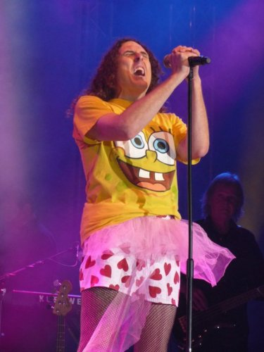

ATP: Godspeed You! Black Emperor's Nightmare Before Christmas
The Nightmare Before Christmas - never has a festival been more accurately named, with not only a long snowy trek to get there, but also the prospect of a weekend spent in the freezing cold watching a terrifying array of noise acts (ageing free improvisation trio Borbetomagus won the prize for most unlistenable act due to their inhumane treatment of saxophones), as chosen by festival curators, the recently reformed anarchist instrumentalists Godspeed You! Black Emperor. Added to this was the sad loss of headliner Throbbing Gristle/X-TG the week before the festival, and the legendary ATP atmosphere seemed very far away on the Friday night. The organiser's solution of playing the band's music from an empty stage while handing out free ale in memory of Sleazy was oddly touching, but the absence of a live act did drive a crowd to the smaller Centre Stage, making it impossible to catch Black Dice's apparently demented set.
Part of the festival’s appeal is its delightful incongruity – with Butlins offering unusual leisure activities like playful teasing by the security staff (they did have a point about the amount of beards) and tattoo spotting in the swimming pool. The problem with this incongruity though is that the spaces provided were not designed to watch bands in. In particular the vast Pavilion stage (more of a food court than a stage really), caused the undoing of most of the acts who appeared there regardless of the quality of their material, such as The Berg Sans Nipple and Scout Niblett. To be fair the setting wasn't entirely to blame for the former falling flat as the French-American duo effectively sabotaged their set by ignoring the lush Air-but-with-better-drums sound of their first album. They did close on an energetic Nonante-Trois, with both members hammering away on whatever percussive instruments were close to hand, but it didn't make up for the disappointment of the preceding hour (which at one point had descended into a painful attempt at rapping). Scout Niblett made an effort to be noticed from the distance by donning a fetching reflective construction worker's jacket, and her set did include a few nice surprises – such as dropping We Are The World into the middle of Your Beat Kicks Back Like Death and a passionate rendition of Kiss – but there was only so much that her and her drummer could do to capture the audience's interest, and many songs merely drifted over the massive hall.
Conversely, one act who probably should have been on the Pavilion, if only to satisfy demand, was Neurosis. Judging by the amount of their t-shirts spotted on site, the band were the biggest draw of the festival and their filling the Centre Stage to capacity did make it hard to catch much of their set. But then pitch-perfect performances of tracks such as Locust Star, which deftly walked the line between heavy and melodic, did demonstrate that they deserved to do so.
The acts who reacted to the strangeness of their surroundings provided most of the weekend's memorable moments. For example Tim Hecker and installation artist Francisco Lopez both turned in waves of glitchy electronica probably influenced by Minehead's picturesque coast, albeit with very different intentions. Hecker finished off the Friday by delivering warm, undulating sounds from his MacBook, with enough bass to revitalise the most tired of bodies, whereas Lopez blindfolded his audience and bombarded them with a white-noise heavy soundscape (unfortunately the first half clashed with Godspeed's final slot of the weekend so an influx of late-comers didn't get the full effect, but that didn't stop it being captivating). Elsewhere Marissa Nadler may have been the most weather-appropriate act of the festival as, while icily stabbing at an acoustic guitar, she gently offered laments on mortality, and the snow. Sadly she neglected last year's excellent Little Hells album in favour of tracks from her as-yet-unrecorded follow-up, but her genuine appreciativeness of the audience did produce one of the weekend’s more charming sets.
The first band of the weekend to adequately tackle the Pavilion were torch-song veterans Tindersticks. The dark romanticism of songs such as Tiny Tears, as well as Stuart Staples' bizarre-yet-sensuous voice, may seem to be a more appropriate soundtrack for a bar than a branch of Burger King but the lushly orchestrated likes of My Oblivion, and the sheer number of band members enabled them to fill the stage effectively.
Brooklynites Oneida took the make-the-space-your-own approach to an extreme, transforming western themed bar Crazy Horse into a facsimile of their studio, mainly by hanging bits of white cloth and playing to relentless loops of projected animations. The band's ten hour set probably only featured 15-20 songs, such was the length of each, however, the set was was probably intended to be consumed by occasionally popping in to check how they were getting on (even by the eight hour point the band's Krautrock inspired jams sounded incredibly tight, although they had understandably opted for a slightly more relaxed pace).
Godspeed You! Black Emperor themselves got better as the weekend went on. Their Friday set was a slight disappointment – not that it didn't have its fair share of stirring moments and nice touches, such as the band playing the audience into the room with a low ominous drone; an opening choice of Lift Yr Skinny Fists (the setlist drew mostly on the album of the same name, with a fair few old-but-as-yet-still-unreleased tracks also thrown in); a powerful close in BBF III; and the simultaneous use of four 16mm projectors which created some arresting visuals. Largely the problem was that they seemed too tight, controlled and a little cold – presumably because the band had over-rehearsed to compensate for their half a decade hiatus (the set was so controlled that it even ended dead-on the allocated finish time). Saturday's setlist once again drew on Lift Yr Skinny Fists, but also dipped into other albums Yanqui UXO and F#A#∞ in the form of a blissfully ferocious Sad Mafioso (probably the band's most well known 'song' thanks to its use in 28 Days Later) as set closer. Crucially they seemed to be enjoying themselves by this point and felt relaxed enough to allow their set to overrun. Their final set of the weekend may have been the shortest of the three, but kept the relaxed air and mixed material nicely from both of the previous night's set-lists.

Although it was a privilege to see Godspeed play together after a long time away, the real highlight of the weekend was the Sunday night combo of pop parodist Weird Al Yankovic and Serbian father and son led brass band Boban I Marko Markovic Orkestar. Presumably booked as an ironic bit of nostalgia, Yankovic's enthusiasm for being there (amazingly it was his first ever European performance) was infectious, as was the energy of his elaborately designed live show. Changing musical style, and costume, with every number, highlights included a cheeky recreation of the Smells Like Teen Spirit video, complete with cheerleaders and Yankovic's deft handling of a Segway during Chamillionaire parody White and Nerdy. What made it even more incredible was the fact that Yankovic was battling a fever throughout the performance, as he revealed in a sweetly apologetic aside after losing concentration – many young upstarts could learn a thing or two from his sense of showmanship. In fact the same could be said for the Markovic Orkestar as, despite being crammed onto a smaller stage, the numerous band members used the intimate opportunity to work up the audience, as well as each other, into a frenzy of excitement. The resulting set, which ran way over-schedule due to reluctance from both the band and audience for it to end, featured faltering audience sing-a-longs in Serbian, a few fits of giggles, a conga line that snaked across the dance-floor and more than one occurrence of crowd surfing.
Unfortunately ATP's decision to schedule agrarian black-metallers Wolves in the Throne Room straight after the Markovics effectively killed the party atmosphere (which the goofy pop charms of Deerhoof just about managed to salvage at the end of the night). Watching the band set-up banners, candles and even tree branches on the stage was entertaining, sadly their live act wasn't so much as the nuance and subtlety that makes them surprisingly great on record was completely lost in a cloud of distortion, much like the band themselves were thanks to their overly powerful fog machine (the blue lights mounted to the guitar fretboards looked great though). A much better time was being had by the small bunch of folks who had drifted in to the Awesome Tapes from Africa DJ set in the Crazy Horse, the sight of their valiant efforts to dance to such alien music provided an appropriately strange yet heart-warming final image for the festival.
22 December, 2010 - 19:04 — Mark Davison